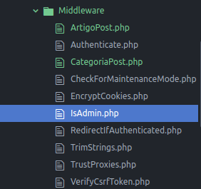

Um Middleware é um filtro para validar praticamente qualquer coisa. Podemos validar se o usuário está logado, ou se o formulário foi submetido corretamente por exemplo.
A esta altura do tutorial você já deve saber como acessar o bash do Laradock para executar comandos dentro do projeto Laravel, mas vamos relembrar mais uma vez:
Abra o terminal e acesse a pasta do laradock:
Acesse o bash da workspace do laradock:
Você verá que o terminal ficou parecido com isso:
Acesse a pasta do projeto:
Criaremos as middlewares CategoriaPost e ArtigoPost. Colocarei Post no nome pois posteriormente posso implementar outros middlewares para outras funções, como por exemplo, criar um middleware ArtigoEdit para permitir que somente o dono do artigo possa etitá-lo.
Mais uma vez utilizaremos nosso amigo Artisan para criar tudo para nós:
Se tudo estiver ok, os middlewares criados poderão ser vistos em App/Http/Middleware:

Como você pode ver na imagem, existem vários outros middlewares já criados pelo Laravel de forma automática.
Inclusive já existe um middleware para validar se o usuário está logado, e nós o implementaremos mais a frente no nosso tutorial, na sessão Controller para permitir que somente usuários logados possam postar artigos.